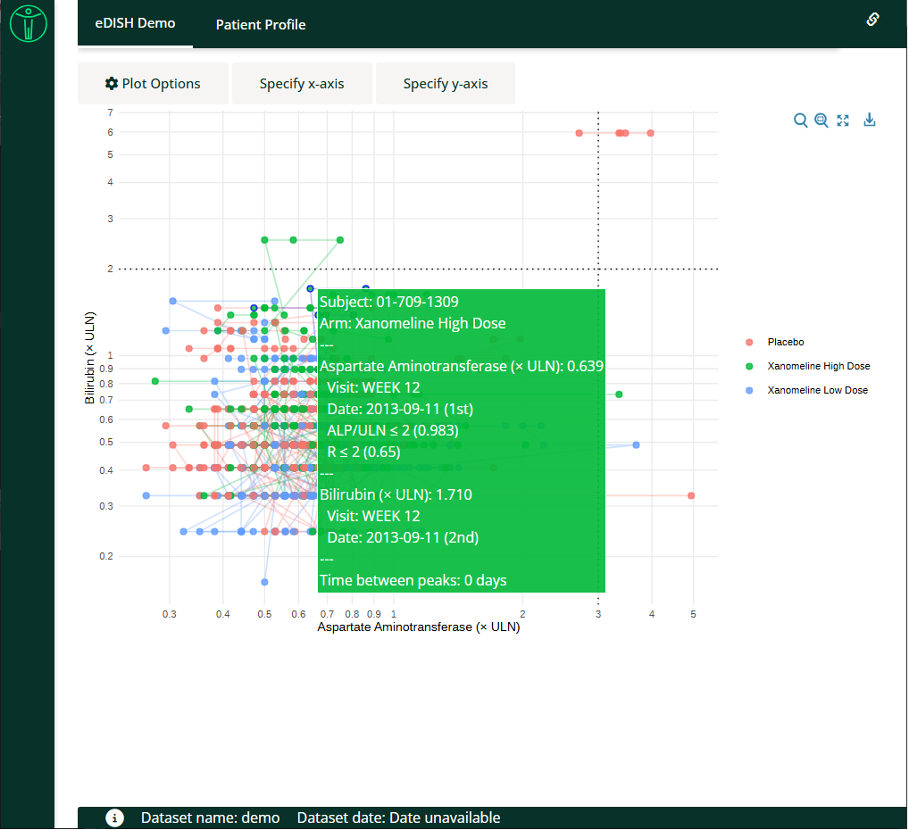

The eDISH module supports the assessment of drug-induced liver injury by means of the (modified) evaluation of Drug-Induced Serious Hepatotoxicity plot.

Installation
if (!require("remotes")) install.packages("remotes")
remotes::install_github("Boehringer-Ingelheim/dv.edish")Features
The eDISH module shows a scatter plot depicting correlations of two lab parameters on a subject-level.
The parameter to be displayed on each axis can be selected by the app user. Moreover, the parameters can be displayed in multiples of either their upper limit normals (resulting in the eDISH plot) or the corresponding subject’s baseline values (resulting in the mDISH plot).
Horizontal and vertical reference lines indicate Hy’s law multiples and can be updated by the user.
By default, the x- and y-axis ranges are determined by the data, but the user can specify their own ranges. Both lower and upper values of an axis range need to be specified for the range to take effect. If either value is missing then the default axis range is used.
Creating an eDISH application
The following example shows how to set up a simple DaVinci app by means of {dv.manager}. The app contains the eDISH module to display dummy data provided by the {pharmaverseadam} package:
dm <- pharmaverseadam::adsl
lb <- pharmaverseadam::adlb
module_list <- list(
"edish" = dv.edish::mod_edish(
module_id = "edish",
subject_level_dataset_name = "dm",
lab_dataset_name = "lb",
arm_default_vals = c("Xanomeline Low Dose", "Xanomeline High Dose"),
baseline_visit_val = "SCREENING 1"
)
)
dv.manager::run_app(
data = list("demo" = list("dm" = dm, "lb" = lb)),
module_list = module_list,
filter_data = "dm"
)Note that the module expects two datasets:
-
A Demographics dataset (e.g.
dmoradsl) including, at least, variables containing the following information:Unique subject identifier (e.g.
USUBJID)Arm (e.g.
ACTARM)
-
A Laboratory Test Results dataset (e.g.
lboradlb) including, at least, variables containing the following information:Unique subject identifier (e.g.
USUBJID)Visit (e.g.
VISIT)Lab test result name (e.g.
LBTEST)Numeric lab test result (e.g.
LBSTRESN)Lab test reference range upper limit (e.g.
LBSTNRHI)